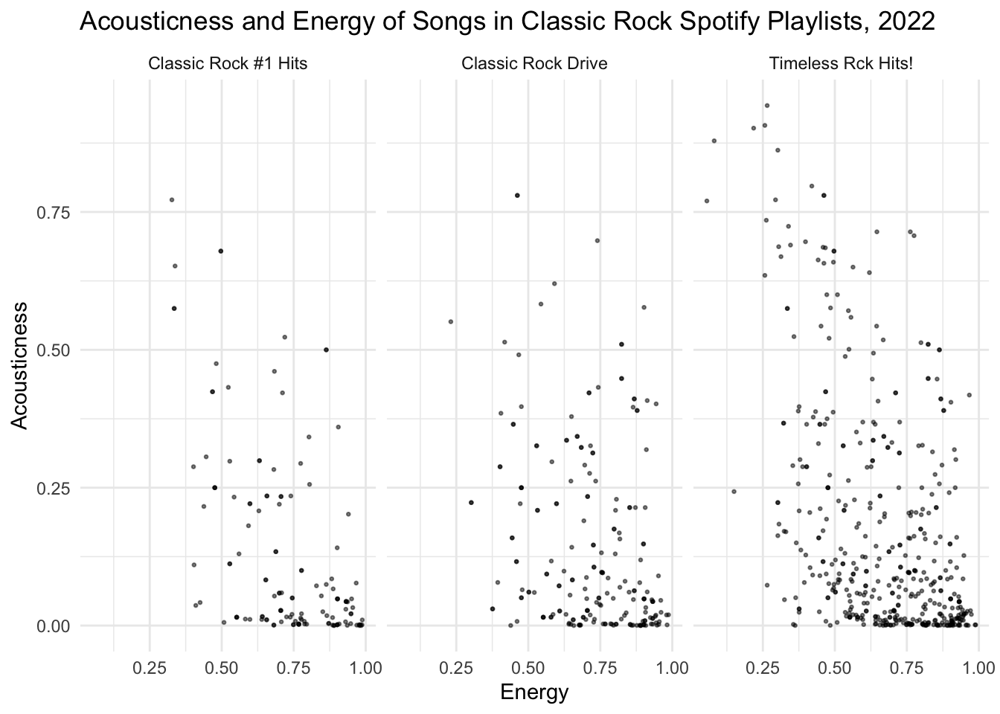

library(spotifyr)
# id <- 'FILL CLIENT ID HERE'
# secret <- 'FILL CLIENT SECRET HERE'
# Sys.setenv(SPOTIFY_CLIENT_ID = id)
# Sys.setenv(SPOTIFY_CLIENT_SECRET = secret)Lab 3: Plotting Frequencies and Distributions
Introduction
The goal of this lab is to provide you with practice in producing data visualizations that help to answer a research question.
Learning Goals
Produce and interpret univariate plots
Produce and interpret multivariate plots
Summarize and interpret variation and co-variation from observation of plots
Contextualize plots with descriptive labels and titles
Review of Key Terms
- Multivariate Plots
-
Plots that summarize and visualize the distribution and relationship between multiple variables
- Univariate Plots
-
Plots that summarize and visualize the distribution of a single variable
- Variation
-
The degree to which categorical or numeric values vary across data
Spotify Dataset
Today, we are prioritizing joy! Our research question will be: How joyful are popular Spotify playlists in my favorite music genre?
The music feature from Spotify’s data that serves as a measure of joy is called valence. This is the description from their API documentation for valence:
A measure from 0.0 to 1.0 describing the musical positiveness conveyed by a track. Tracks with high valence sound more positive (e.g. happy, cheerful, euphoric), while tracks with low valence sound more negative (e.g. sad, depressed, angry).
(Pretty vague if you ask me, but today we’ll go with it.)
Setting Up Your Environment
Tip
Today’s set-up is a little more complicated than usual, so be sure to take it slow and ask questions as they come up!
Install the Spotify R package by entering the following into your Console:
install.packages("spotifyr")Log-in to Spotify’s Developer Dashboard here. If you have a Spotify account, you can log-in with that account. Otherwise, you should create one.
Click the ‘Create an App’ button to create an app named “SDS 192 Class Project”. You can indicate that this is a “Project for SDS 192 class”
Click Edit Settings. Under the heading Redirect URIs copy and paste this URL: http://localhost:1410/, and click Add. Scroll to the bottom of the window and click Save. This is going to allow us to authenticate our Spotify accounts through our local computers.
Click the Users and Access button. Scroll down to Add New User, and add your name and the email address associated with your Spotify account. Click Add.
Click “Show Client Secret”. Copy client id and secret into the code below, remove the comments in the code chunk, and then run the code chunk.
Navigate to https://open.spotify.com/. Below replace
poirilwith your Spotify username. This is the ID that appears in the upper right hand corner when you log into your Spotify account (not your developer account.)
Search Spotify for your favorite music genre and select three playlists from the search. Note that this code will only work for playlists, and playlists may be a ways down in the search results.
When you click on a playlist, notice the URL in the navigation bar of your web browser. It should look something like spotify.com/playlist/LONG_STRING_OF_CHARACTERS. Copy the long string of characters at the end of the URL, and paste it into the function below. Your characters should replace the example playlist I’ve added:
7ryj1GwAWYUY36VQd4uXoq.Repeat this for the other two playlists, replacing my other examples. Then run the code.
library(tidyverse)
spotify_playlists <- get_playlist_audio_features(
username = "poiril",
playlist_uris = c("7ryj1GwAWYUY36VQd4uXoq",
"3DYUw0nHB9o8tLZKQup4zp",
"37i9dQZF1DXdOEFt9ZX0dh"),
authorization = get_spotify_access_token()
) %>%
select(-c(track.artists,
track.available_markets,
track.album.artists,
track.album.available_markets,
track.album.images))Data Analysis
In the exercises below, you will create a series of plots that will enable us to compare the joyfulness of the three playlists you’ve selected.
I encourage you to take a look at the spotify_playlists data frame in your environment. You’ll note that each row in the dataset is a song/track from one of the the three playlists you selected (unique ID would be track.id), and columns provide information about that song (such as the track.name, the playlist it is a part of, its key, loudness, danceability, and acousticness). We can produce some pretty cool visualizations from this data. For instance check out how we might compare the relationship between the energy and acousticness of songs across the three selected playlists.
spotify_playlists %>%
ggplot(aes(x = acousticness, y = energy)) +
geom_point(alpha = 0.5, size = 0.5) +
coord_flip() +
facet_wrap(vars(playlist_name)) +
labs(title = "Acousticness and Energy of Songs in Classic Rock Spotify Playlists, 2022",
x = "Acousticness",
y = "Energy") +
theme_minimal()
Tip
You might use this plot as a starting template for the plots you are going to create below!
We’re going to start our analysis with univariate plotting. Specifically, we are going to produce data visualizations that count the number of observations in a dataset that fall into specific groupings. When grouping observations by a categorical variable, we will produce a bar plot. When grouping observations into intervals of a numeric variable, we will produce a histogram. Remember when labeling that these plots visualize frequency.
Warning
Keep in mind that all plots should have 5 contextual details represented in titles or labels:
The data’s unit of observation
The variables represented
Any filters applied
The geographic scope of the data
The temporal scope of the data
Question
How many songs are in each playlist? Create a plot to visualize this, and order the results by the number of songs. Be sure to give it a descriptive title and labels covering all 5 essential components of data context.
# Create plot hereQuestion
What is the distribution of valence across all of the songs (in intervals of 0.1 valence)? Create a histogram to visualize this. Be sure to give it a descriptive title and labels covering all 5 essential components of data context.
# Create plot hereLet’s move on to some multivariate plotting. Remember that we can add further variables to a plot via a number of different aesthetics (e.g. color: fill= or col=; size: size=; position: x= or y=, small multiples: + facet_wrap(vars(...)) ). Whenever we add further data to a plot, we should be on the lookout for overplotting.
Question
What is the distribution of valence across all of the songs (in intervals of 0.1 valence) in each playlist? Create a histogram to visualize this. Be sure to give it a descriptive title and labels covering all 5 essential components of data context.
# Create plot hereQuestion
What are differences in the summary statistics (max, min, median, etc.) of the valence of songs in each playlist? Create grouped boxplot to visualize this. Be sure to give it a descriptive title and labels covering all 5 essential components of data context.
# Create plot hereQuestion
Do happier songs tend to be more danceable in each playlist? Create a plot to visualize this. Be sure to give it a descriptive title and labels covering all 5 essential components of data context. Also be sure to adjust your plot to address overplotting.
# Create plot hereQuestion
Do songs composed with the minor or major mode_name tend to be happier in each playlist? Create a plot to visualize this. Be sure to give it a descriptive title and labels covering all 5 essential components of data context.
# Create plot hereQuestion
Do happier songs tend to have a higher tempo across all playlists? What role might the song’s mode play? Create a plot to visualize this. Be sure to give it a descriptive title and labels covering all 5 essential components of data context. Also be sure to adjust your plot to address overplotting.
#Create plot hereQuestion
Based on all of your plots, summarize what you learned about the joyfulness of these three playlists below.
Ethical Considerations
Check out this article documenting ethical concerns regarding Spotify’s data collection practices. Should we be concerned about the assumptions that Spotify makes about us based on our music streaming habits? What about the way they curate music for us? What are some of the social consequences to this form of user surveillance? Share your ideas on our `sds-192-discussions` Slack channel.